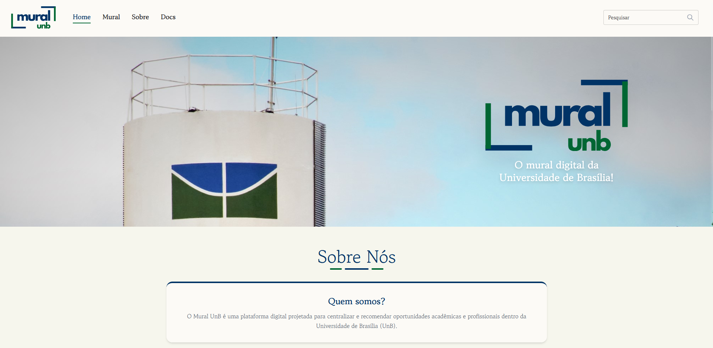

Fase 1 — Requisitos de Avaliação de Qualidade
1. Contexto de Trabalho
Este documento registra a execução da Fase 1 do processo de avaliação de qualidade de software, conforme definido pela família de normas ISO/IEC 25000 (SQuaRE) [1]. A atividade é desenvolvida no âmbito da disciplina Qualidade de Software do curso de Engenharia de Software da FCTE-UnB e tem como objeto de análise a aplicação web Mural UnB, disponível em https://muralunb.com.br.
A Fase 1, denominada "Estabelecimento dos Requisitos de Avaliação", tem como objetivo definir o escopo, o propósito e o modelo de qualidade que orientarão as fases subsequentes de especificação e execução da avaliação [2].
2. Descrição Estruturada do Software Avaliado
O Mural UnB é uma plataforma digital desenvolvida pelo projeto MDS/GPP da Universidade de Brasília com o propósito de centralizar e organizar a divulgação de oportunidades, eventos e avisos acadêmicos dirigidos à comunidade universitária. O sistema coleta informações de múltiplas fontes, aplica processamento automatizado com inteligência artificial e as disponibiliza em interface web de acesso público.

Figura 1 - Tela inicial Mural UnB2.1 Objetivos da Plataforma
O projeto foi concebido para substituir a comunicação dispersa em grupos informais de mensagens e murais físicos, fornecendo um canal estruturado e categorizado de informações. Entre as finalidades declaradas no repositório oficial [3], destacam-se:
- centralização de oportunidades acadêmicas (bolsas, estágios, eventos);
- categorização e filtragem de conteúdo por relevância;
- automação do processo de coleta, processamento e publicação de dados; e
- garantia de integridade e atualização contínua do conteúdo exibido.
2.2 Arquitetura Técnica
| Camada | Tecnologia |
|---|---|
| Interface | React 18 com TypeScript e Tailwind CSS |
| Processamento de dados | Python (pandas), API Gemini (LLM), GitHub Actions |
| Armazenamento intermediário | JSON |
| Hospedagem e entrega | GitHub Pages |
| Controle de versão e CI/CD | Git, GitHub, GitHub Actions |
A arquitetura é predominantemente estática com geração automatizada de dados: um pipeline de coleta e processamento é executado periodicamente via GitHub Actions, gerando arquivos JSON que alimentam o frontend React implantado no GitHub Pages [3].
3. Requisitante e Partes Interessadas
Em conformidade com o processo SQuaRE [2], foram identificadas as partes interessadas relevantes para esta avaliação:
| Papel | Identificação |
|---|---|
| Requisitante da avaliação | Professora Cristiane Ramos — disciplina Qualidade de Software (FCTE-UnB) |
| Avaliadores | Grupo Irmã Mary Keller — T02, 2026-1 |
| Desenvolvedores do produto | Equipe MDS/GPP UnB — projeto 2025-2-Mural-UnB |
| Usuários finais | Discentes e docentes da Universidade de Brasília |
| Operadores | Mantenedores do repositório GitHub da aplicação |
| Beneficiários institucionais | Secretaria de Comunicação e coordenações de curso da UnB |
4. Classificação do Tipo de Produto
A classificação do produto segue os critérios estabelecidos pela ISO/IEC 25010 [1] para categorização de sistemas de software:
| Aspecto | Caracterização |
|---|---|
| Tipo de software | Aplicação web de acesso público |
| Categoria funcional | Sistema de mural digital e agregação de conteúdo acadêmico |
| Natureza de uso | Leitura pública sem autenticação; administração por pipeline automatizado |
| Modelo de implantação | Hospedagem estática (GitHub Pages) com CI/CD automatizado |
| Natureza do código | Código aberto (open source), desenvolvido em contexto acadêmico |
| Ciclo de vida esperado | Projeto de duração semestral com possibilidade de continuidade por turmas futuras |
A natureza open source e o ciclo de vida acadêmico são aspectos determinantes para a seleção das características de qualidade avaliadas, conforme detalhado na seção 7.
5. Propósito da Avaliação e Uso Pretendido dos Resultados
O propósito desta avaliação é verificar, de forma sistemática e baseada em evidências, em que medida o Mural UnB satisfaz requisitos de qualidade relevantes para um sistema de informação acadêmica de acesso público, desenvolvido e mantido em contexto de aprendizagem.
Os resultados produzidos serão utilizados para:
- documentar o estado de qualidade atual do software em relação às características selecionadas, fornecendo uma linha de base para comparações futuras;
- identificar não conformidades e oportunidades de melhoria que possam ser comunicadas à equipe de desenvolvimento como contribuição ao projeto; e
- subsidiar as Fases 2 e 3 da avaliação SQuaRE, que compreenderão a especificação das métricas, a execução das medições e a apresentação dos resultados consolidados.
Os resultados não têm como objetivo classificar ou reprovar o software, mas sim produzir conhecimento técnico aplicado e demonstrar o domínio do processo de avaliação pelos avaliadores [2].
6. Modelo de Qualidade — ISO/IEC 25010 e Adaptação
O modelo de referência adotado é o definido pela ISO/IEC 25010:2011 [1], que organiza a qualidade do produto de software em oito características principais. Para esta avaliação, o modelo foi adaptado ao contexto específico do Mural UnB, restringindo o escopo a três características consideradas prioritárias. A característica Usabilidade foi explicitamente excluída por determinação metodológica da disciplina [4].
6.1 Representação Gráfica do Modelo Adaptado
Diagrama 1 — Características Funcionais e de Confiabilidade
graph TD
A["Qualidade do Produto — Mural UnB"] --> B["Adequação Funcional<br/>(selecionada)"]
A --> C["Confiabilidade<br/>(selecionada)"]
B --> B1["Completude Funcional"]
B --> B2["Correção Funcional"]
B --> B3["Pertinência Funcional"]
C --> C1["Maturidade"]
C --> C2["Disponibilidade"]
C --> C3["Tolerância a Falhas"]Diagrama 2 — Manutenibilidade e Características fora do Escopo
graph TD
A["Qualidade do Produto — Mural UnB"] --> D["Manutenibilidade<br/>(selecionada)"]
A --> X["Usabilidade<br/>(excluída — diretriz disciplina)"]
A --> Y["Segurança, Desempenho,<br/>Compatibilidade, Portabilidade<br/>(fora do escopo desta fase)"]
D --> D1["Modularidade"]
D --> D2["Analisabilidade"]
D --> D3["Modificabilidade"]
D --> D4["Testabilidade"]
style X stroke:#cc0000,stroke-width:2px,stroke-dasharray:5 5
style Y stroke:#888888,stroke-width:2px,stroke-dasharray:3 36.2 Descrição das Subcaracterísticas Avaliadas
Adequação Funcional — avalia se as funções fornecidas cobrem as tarefas e objetivos declarados dos usuários com a abrangência e a precisão necessárias [1]. As subcaracterísticas relevantes para o Mural UnB são:
- Completude Funcional: verificação se todas as funções esperadas para um mural digital (listagem, filtragem, categorização, atualização) estão implementadas;
- Correção Funcional: verificação se o sistema produz resultados corretos com o nível de precisão necessário; e
- Pertinência Funcional: avaliação de se as funções implementadas facilitam o cumprimento do propósito declarado sem incluir funções desnecessárias.
Confiabilidade — avalia em que grau o sistema executa funções especificadas sob condições definidas por um período de tempo determinado [1]. As subcaracterísticas relevantes são:
- Maturidade: frequência com que o sistema apresenta falhas em operação normal;
- Disponibilidade: capacidade do sistema de estar acessível e operacional quando requisitado; e
- Tolerância a Falhas: capacidade de o sistema operar como pretendido na presença de falhas de hardware ou software.
Manutenibilidade — avalia a eficácia e eficiência com que o sistema pode ser modificado para correção, melhoria ou adaptação ao ambiente [1]. As subcaracterísticas relevantes são:
- Modularidade: grau em que o sistema é composto de componentes discretos, de forma que mudanças em um componente tenham impacto mínimo sobre os demais;
- Analisabilidade: facilidade de diagnosticar deficiências ou identificar partes que precisam ser modificadas;
- Modificabilidade: facilidade de realização de modificações sem introdução de defeitos; e
- Testabilidade: facilidade de estabelecer critérios de teste para o sistema e de verificar se eles foram satisfeitos.
7. Características Selecionadas — Critérios de Priorização
7.1 Critérios Adotados
A seleção e priorização das características seguiu quatro critérios, derivados do propósito declarado e do tipo de produto identificado na seção 4:
Critério C1 — Criticidade para o propósito declarado: quanto a ausência ou falha na característica compromete o objetivo central do sistema (mural acadêmico de informações confiáveis).
Critério C2 — Mensurabilidade objetiva: existência de métricas e procedimentos de medição estabelecidos pela ISO/IEC 25023 [5] que possam ser aplicados ao artefato avaliado sem instrumentação invasiva.
Critério C3 — Impacto sobre os usuários finais: extensão do prejuízo causado a discentes e docentes em caso de não conformidade com a característica.
Critério C4 — Relevância para o contexto open source acadêmico: importância da característica para a sustentabilidade do projeto ao longo de múltiplos semestres e equipes de desenvolvimento distintas.
7.2 Aplicação dos Critérios
| Característica | C1 — Criticidade | C2 — Mensurabilidade | C3 — Impacto usuário | C4 — Open source | Prioridade |
|---|---|---|---|---|---|
| Adequação Funcional | Alta | Alta | Alto | Média | 1 |
| Confiabilidade | Alta | Alta | Alto | Média | 2 |
| Manutenibilidade | Média-Alta | Alta | Indireto | Alta | 3 |
7.3 Relação das Características com o Propósito Declarado
A Adequação Funcional é a característica com maior alinhamento ao propósito, pois um mural digital que não cobre as funções esperadas (exibição, categorização e atualização de oportunidades acadêmicas) falha em sua razão de existir, independentemente de outros atributos de qualidade.
A Confiabilidade é diretamente relacionada ao propósito porque a utilidade do sistema é nula quando ele está indisponível ou exibe dados desatualizados. Considerando que a atualização depende de pipelines automatizados (GitHub Actions), falhas nesse pipeline afetam a confiabilidade percebida pelo usuário.
A Manutenibilidade sustenta o propósito no horizonte temporal do projeto: como o desenvolvimento é conduzido por equipes de estudantes que se renovam a cada semestre, a capacidade de compreender e modificar o código é condição necessária para a evolução contínua das funcionalidades e a correção de defeitos identificados.
A relação entre as três características será analisada nos resultados finais: espera-se que baixa manutenibilidade aumente a incidência de defeitos funcionais e de confiabilidade, e que falhas de adequação funcional indiquem necessidade de refatoração que demanda alta manutenibilidade.
8. Escopo, Profundidade e Objetos de Avaliação
8.1 Escopo
A avaliação abrange o produto de software implantado em https://muralunb.com.br e o código-fonte disponível no repositório [3], considerando:
- interface web pública (frontend React);
- pipeline de coleta e processamento de dados (scripts Python e workflows GitHub Actions); e
- documentação técnica disponível no repositório.
O backend de banco de dados (quando aplicável) e aspectos de infraestrutura de rede estão fora do escopo desta avaliação, por não serem acessíveis para inspeção pelos avaliadores.
8.2 Profundidade
| Tipo de Análise | Aplicação |
|---|---|
| Inspeção de código-fonte | Análise estática de modularidade, analisabilidade e testabilidade |
| Testes funcionais (caixa-preta) | Verificação de completude, correção e pertinência funcional |
| Monitoramento de disponibilidade | Verificação de acessibilidade e tempo de resposta do sistema implantado |
| Análise de histórico de falhas | Inspeção de issues e releases no repositório GitHub |
8.3 Relação com Avaliações Futuras
Esta Fase 1 estabelece os requisitos que orientarão:
- Fase 2 (Especificação da Avaliação): definição de métricas, procedimentos de medição e critérios de julgamento para cada subcaracterística selecionada;
- Fase 3 (Execução da Avaliação): coleta de dados brutos, aplicação das métricas e consolidação dos resultados; e
- Fase 4 (Execução da Avaliação): coleta de dados brutos, cálculo das métricas, julgamento final e recomendações de melhoria.
Não há avaliações anteriores deste software pelos avaliadores que possam ser utilizadas como linha de base comparativa.
9. Objetivos de Desenvolvimento Sustentável Relacionados
O Mural UnB conecta-se a objetivos da Agenda 2030 da ONU [6] que são diretamente relevantes à sua função de plataforma de comunicação acadêmica aberta.
ODS 4 — Educação de Qualidade
| Meta | Indicador | Vínculo com o Mural UnB |
|---|---|---|
| 4.3 — Garantir acesso igual a ensino técnico, profissional e de nível superior de qualidade | 4.3.1 — Taxa de participação de jovens e adultos em educação formal e não formal | A plataforma amplia o acesso a informações sobre bolsas, monitorias e eventos que viabilizam a permanência estudantil e o aproveitamento acadêmico |
| 4.b — Ampliar o número de bolsas de estudo disponíveis | — | O sistema agrega e divulga oportunidades de bolsas e estágios, reduzindo a assimetria de informação entre estudantes |
ODS 16 — Paz, Justiça e Instituições Eficazes
| Meta | Indicador | Vínculo com o Mural UnB |
|---|---|---|
| 16.6 — Desenvolver instituições eficazes, responsáveis e transparentes | 16.6.2 — Proporção da população satisfeita com experiência mais recente dos serviços públicos | A plataforma melhora a eficácia da comunicação institucional da UnB, tornando informações públicas mais acessíveis e organizadas |
| 16.10 — Assegurar o acesso público à informação | 16.10.2 — Número de países que garantem acesso público à informação | O sistema implementa, em nível institucional, o princípio de acesso público à informação acadêmica |
ODS 9 — Indústria, Inovação e Infraestrutura
| Meta | Indicador | Vínculo com o Mural UnB |
|---|---|---|
| 9.b — Apoiar o desenvolvimento de tecnologia, pesquisa e inovação nacionais | — | O projeto fomenta o desenvolvimento de tecnologias abertas por estudantes de engenharia, contribuindo para a formação de capacidade técnica nacional |
10. Referências Bibliográficas
- [1] ISO/IEC 25010:2011. Systems and software engineering — Systems and software Quality Requirements and Evaluation (SQuaRE) — System and software quality models. International Organization for Standardization, 2011.
- [2] ISO/IEC 25040:2011. Systems and software engineering — SQuaRE — Evaluation process. International Organization for Standardization, 2011.
- [3] Mural UnB. Repositório do projeto. GitHub, 2025. Disponível em: https://github.com/unb-mds/2025-2-Mural-UnB. Acesso em: maio 2026.
- [4] RAMOS, Cristiane. Roteiro da Disciplina Qualidade de Software — 2026-1. FCTE-UnB, 2026. (Documento interno da disciplina.)
- [5] ISO/IEC 25023:2016. Systems and software engineering — SQuaRE — Measurement of system and software product quality. International Organization for Standardization, 2016.
- [6] ONU BRASIL. Objetivos de Desenvolvimento Sustentável. Disponível em: https://brasil.un.org/pt-br/sdgs. Acesso em: maio 2026.
Histórico de Versões
| Versão | Data | Descrição | Autor |
|---|---|---|---|
| 1.3 | 19/06/2026 | Adcionando tela inicial do mural UnB com descrição e enumeração | Paulo Nery Lobo |
| 1.2 | 12/06/2026 | Correção do cabeçalho duplicado na seção 6.1; alinhamento da nomenclatura da Fase 4 com o restante do documento | Ranni Heler |
| 1.1 | 13/05/2026 | Reestruturação da fase 1 | Matheus Rodrigues |
| 1.0 | 11/05/2026 | Criação da estrutura inicial da página com contexto, modelo de qualidade e características selecionadas | Paulo Nery Lobo |